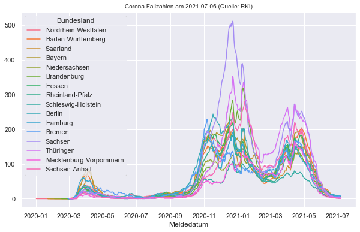
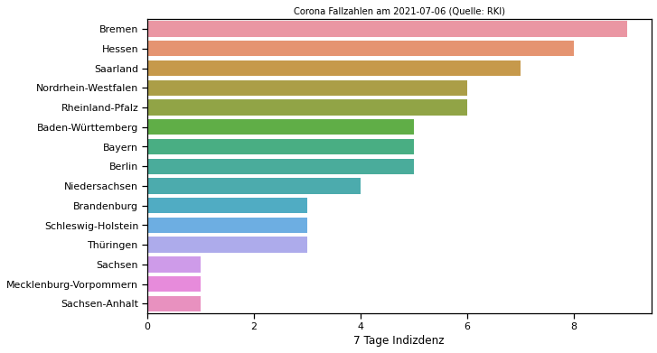
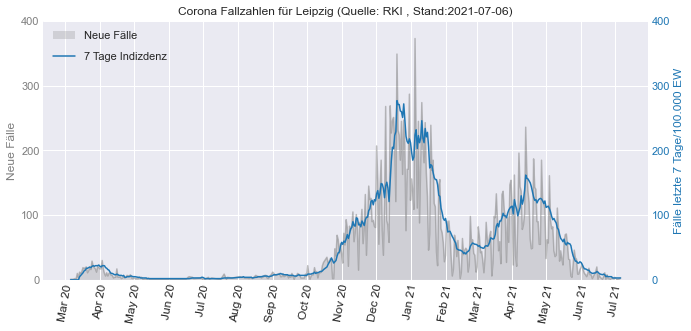

RKI Corona Plots
Contents
3.8. RKI Corona Plots#
3.8.1. 7 Tages Inzidenz pro Bundesland#
import pandas as pd
Bundeslaender_RM7 = pd.read_csv("data/RKI_Corona_Bundeslaender_RM7.csv")
Bundeslaender_RM7['Meldedatum'] = pd.to_datetime(Bundeslaender_RM7['Meldedatum'],format='%Y/%m/%d')
Bundeslaender_RM7
| Meldedatum | Bundesland | Neue Fallzahlen | Neue Fallzahlen Mittelwert (7 Tage) | Neue Fallzahlen Summe (7 Tage) | Faelle gesamt | 7 Tage Indizdenz | |
|---|---|---|---|---|---|---|---|
| 0 | 2020-01-02 00:00:00+00:00 | Nordrhein-Westfalen | 1 | 0 | 0 | 1 | 0.0 |
| 1 | 2020-02-20 00:00:00+00:00 | Nordrhein-Westfalen | 1 | 0 | 0 | 2 | 0.0 |
| 2 | 2020-02-26 00:00:00+00:00 | Nordrhein-Westfalen | 3 | 0 | 0 | 5 | 0.0 |
| 3 | 2020-02-27 00:00:00+00:00 | Nordrhein-Westfalen | 18 | 0 | 0 | 23 | 0.0 |
| 4 | 2020-02-28 00:00:00+00:00 | Nordrhein-Westfalen | 34 | 0 | 0 | 57 | 0.0 |
| ... | ... | ... | ... | ... | ... | ... | ... |
| 7747 | 2021-07-02 00:00:00+00:00 | Sachsen-Anhalt | 2 | 3 | 23 | 99244 | 1.0 |
| 7748 | 2021-07-03 00:00:00+00:00 | Sachsen-Anhalt | 3 | 3 | 24 | 99247 | 1.0 |
| 7749 | 2021-07-04 00:00:00+00:00 | Sachsen-Anhalt | 1 | 3 | 24 | 99248 | 1.0 |
| 7750 | 2021-07-05 00:00:00+00:00 | Sachsen-Anhalt | 3 | 3 | 22 | 99251 | 1.0 |
| 7751 | 2021-07-06 00:00:00+00:00 | Sachsen-Anhalt | 3 | 3 | 22 | 99254 | 1.0 |
7752 rows × 7 columns
import seaborn as sns
import matplotlib.pyplot as plt
import numpy as np
sns.set_context("notebook")
sns.set_style("darkgrid")
fig , ax = plt.subplots(figsize=(10,6))
# plot
ax = sns.lineplot(data=Bundeslaender_RM7,x="Meldedatum", y="7 Tage Indizdenz", hue="Bundesland")
# title
last_date = Bundeslaender_RM7.iloc[-1,0].strftime('%Y-%m-%d') # letztes Datum als Datenstand
ax.set_title("Corona Fallzahlen am "+last_date+" (Quelle: RKI)", fontsize=10)
# Label
ax.set_ylabel("")
plt.savefig('Bundeslaender_RKI-Coronazahlen_Stand'+last_date+'.png', bbox_inches='tight', dpi=150)
plt.show()

3.8.2. Corona Inzidenz am letzten Tag#
Bundeslaender_RM7_lastday=Bundeslaender_RM7.loc[Bundeslaender_RM7["Meldedatum"]==Bundeslaender_RM7["Meldedatum"].iloc[-1]].sort_values(by="7 Tage Indizdenz", ascending=False).reset_index(drop=True)
import seaborn as sns
import matplotlib.pyplot as plt
import numpy as np
sns.set_context("notebook")
fig , ax = plt.subplots(figsize=(10,6))
# plot
ax = sns.barplot(data=Bundeslaender_RM7_lastday,y="Bundesland", x="7 Tage Indizdenz")
# title
last_date = Bundeslaender_RM7_lastday.iloc[-1,0].strftime('%Y-%m-%d') # letztes Datum als Datenstand
ax.set_title("Corona Fallzahlen am "+last_date+" (Quelle: RKI)", fontsize=10)
# Label
ax.set_ylabel("")
plt.savefig('Bundeslaender_RKI-Coronazahlen_Stand'+last_date+'.png', bbox_inches='tight', dpi=150)
plt.show()

Mit Wert innerhalb des Graphs über eine Funktion
def show_values_on_bars(axs, h_v="v", space=0.4, space2=0):
def _show_on_single_plot(ax):
if h_v == "v":
for p in ax.patches:
_x = p.get_x() + p.get_width() / 2
_y = p.get_y() + p.get_height()
value = int(p.get_height())
ax.text(_x, _y, value, ha="center")
elif h_v == "h":
for p in ax.patches:
_x = p.get_x() + p.get_width() + float(space)
_y = p.get_y() + p.get_height() / 2 + float(space2)
value = int(p.get_width())
ax.text(_x, _y, value, ha="right", va="center", c="white")
if isinstance(axs, np.ndarray):
for idx, ax in np.ndenumerate(axs):
_show_on_single_plot(ax)
else:
_show_on_single_plot(axs)
import seaborn as sns
import matplotlib.pyplot as plt
import numpy as np
sns.set_context("notebook")
fig , ax = plt.subplots(figsize=(10,6))
# plot
ax = sns.barplot(data=Bundeslaender_RM7_lastday,y="Bundesland", x="7 Tage Indizdenz")
# show values
show_values_on_bars(ax, "h", -0.1,0.05) # Zahlen hinzufügen
# title
last_date = Bundeslaender_RM7_lastday.iloc[-1,0].strftime('%Y-%m-%d') # letztes Datum als Datenstand
ax.set_title("Corona Fallzahlen am "+last_date+" (Quelle: RKI)", fontsize=10)
# Label
ax.set_ylabel("")
plt.savefig('Bundeslaender_RKI-Coronazahlen_Stand'+last_date+'.png', bbox_inches='tight', dpi=150)
plt.show()
3.8.3. Leipzig#
Leipzig = pd.read_csv("data/RKI_Corona_Leipzig.csv")
Leipzig['Meldedatum'] = pd.to_datetime(Leipzig['Meldedatum'],format='%Y/%m/%d')
import matplotlib.pyplot as plt
import matplotlib.dates as dates
import matplotlib.ticker as tkr
# Allgemein
plt.style.use('seaborn-darkgrid') # default stil einstellen (auch andere stile z.B. auch "seaborn-darkgrid" möglich )
plt.rcParams.update({'font.size': 20});
# Set Figure
fig , ax1 = plt.subplots(figsize=(10,5))
# Plot 1 : ax1 - neue Fälle
# Plot
ax1.plot(Leipzig["Meldedatum"],Leipzig["Neue Fallzahlen"], color='tab:gray', alpha=0.5)
ax1.fill_between(Leipzig["Meldedatum"], Leipzig["Neue Fallzahlen"], 0, facecolor ='tab:gray', alpha=0.25, zorder=-99, label="Neue Fälle")
# Plot 2 : ax2 - Fälle kumuliert
ax2 = ax1.twinx()
# Plot
ax2.plot(Leipzig["Meldedatum"],Leipzig["7 Tage Indizdenz"], color='tab:blue',label="7 Tage Indizdenz", zorder=99)
ax2.grid()
# Legenden
ax1.legend(bbox_to_anchor=(0, 1.0), loc='upper left')
ax2.legend(bbox_to_anchor=(0, 0.92), loc='upper left')
# Zahlen der y-Achse Tausend mit Komma trennen
ax1.get_yaxis().set_major_formatter(tkr.FuncFormatter(lambda x, p: format(int(x), ",")))
ax2.get_yaxis().set_major_formatter(tkr.FuncFormatter(lambda x, p: format(int(x), ",")))
# Farben der zwei y-Achsen anpassen (mit Beschriftung)
ax1.set_ylabel('Neue Fälle', color='tab:gray')
ax2.set_ylabel("Fälle letzte 7 Tage/100.000 EW", color='tab:blue')
ax1.tick_params(colors='tab:gray', which='both', axis="y")
ax2.tick_params(colors='tab:blue', which='both', axis="y")
# y ticks Anpassen
ax1.set_ylim(bottom=0, top=400) # Achse 2 Limits
ax2.set_ylim(bottom=0, top=400) # Achse 1 Limits
nticks=5 # Anzahl Ticks für Achse 1 und 2
ax1.yaxis.set_major_locator(tkr.LinearLocator(nticks))
ax2.yaxis.set_major_locator(tkr.LinearLocator(nticks))
# x ticks Anpassen
ax1.xaxis.set_major_locator(dates.MonthLocator(interval=1)) # jeden Monat ein Tick
ax1.xaxis.set_major_formatter(dates.DateFormatter('%b %y')) # Darstellung Monatsnamekurz + Jahr
# x Tick Schrift Formatierung (Variante 1: eigene Einstellungen)
labels = ax1.get_xticklabels(); # labels auslesen um diese noch mal zu formatieren
plt.setp(labels, rotation=80, fontsize=12); # Labels drehen
# x Tick Schrift Formatierung (Variante 2: automatisch)
#fig.autofmt_xdate()
# title
last_date = Leipzig.iloc[-1,0].strftime('%Y-%m-%d') # letztes Datum als Datenstand
ax1.set_title("Corona Fallzahlen für Leipzig (Quelle: RKI , Stand:"+last_date+")", fontsize=12)
plt.tight_layout()
plt.savefig('Leipzig_RKI-Coronazahlen_Stand'+last_date+'.png', bbox_inches='tight', dpi=150)
plt.show()

3.8.4. Aufgabe#
Plotten Sie die Zahlen für Deutschland
pandas Dataframe
Bundeslaender_RM7für Bundesländer pro Tag aufsummieren (neuen Dataframe erzeugen)Spalte
7 Tage Indizdenzüber dasMeldedatumplotten
Bundeslaender_RM7
| Meldedatum | Bundesland | Neue Fallzahlen | Neue Fallzahlen Mittelwert (7 Tage) | Neue Fallzahlen Summe (7 Tage) | Faelle gesamt | 7 Tage Indizdenz | |
|---|---|---|---|---|---|---|---|
| 0 | 2020-01-02 00:00:00+00:00 | Nordrhein-Westfalen | 1 | 0 | 0 | 1 | 0.0 |
| 1 | 2020-02-20 00:00:00+00:00 | Nordrhein-Westfalen | 1 | 0 | 0 | 2 | 0.0 |
| 2 | 2020-02-26 00:00:00+00:00 | Nordrhein-Westfalen | 3 | 0 | 0 | 5 | 0.0 |
| 3 | 2020-02-27 00:00:00+00:00 | Nordrhein-Westfalen | 18 | 0 | 0 | 23 | 0.0 |
| 4 | 2020-02-28 00:00:00+00:00 | Nordrhein-Westfalen | 34 | 0 | 0 | 57 | 0.0 |
| ... | ... | ... | ... | ... | ... | ... | ... |
| 7747 | 2021-07-02 00:00:00+00:00 | Sachsen-Anhalt | 2 | 3 | 23 | 99244 | 1.0 |
| 7748 | 2021-07-03 00:00:00+00:00 | Sachsen-Anhalt | 3 | 3 | 24 | 99247 | 1.0 |
| 7749 | 2021-07-04 00:00:00+00:00 | Sachsen-Anhalt | 1 | 3 | 24 | 99248 | 1.0 |
| 7750 | 2021-07-05 00:00:00+00:00 | Sachsen-Anhalt | 3 | 3 | 22 | 99251 | 1.0 |
| 7751 | 2021-07-06 00:00:00+00:00 | Sachsen-Anhalt | 3 | 3 | 22 | 99254 | 1.0 |
7752 rows × 7 columns